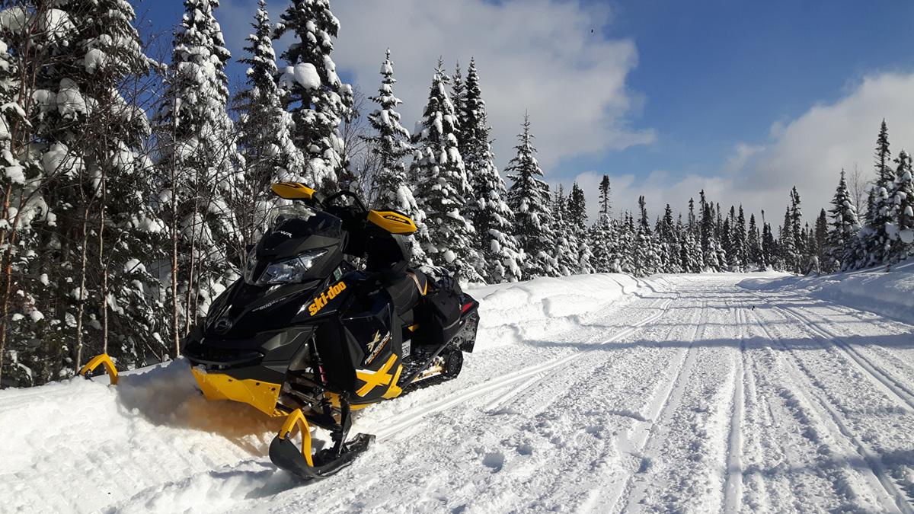

Une offre qui se comprend.
Clarifier votre message et guider vos visiteurs vers l’essentiel.
 NicolasGenaudet
Parlons de votre projet
NicolasGenaudet
Parlons de votre projet
Nicolas GenaudetWeb, design & transmission
J’aide les indépendants, TPE et PME à transformer leur site en un outil de développement : une offre lisible, une meilleure visibilité et un parcours pensé pour générer des contacts. Développeur WordPress freelance basé à Lyon, j’accompagne les indépendants, entreprises dans la création, la refonte et l’évolution de leur site.
Construisons la suite01 / Un site qui travaille avec vous
Indépendants, TPE, PME : votre site doit rendre votre offre évidente, vous rendre visible et donner envie de vous contacter. Je relie stratégie, design et technique pour y parvenir.
Clarifier votre message et guider vos visiteurs vers l’essentiel.
Poser des bases SEO solides et des contenus utiles à vos clients.
Retrouver la main sur WordPress, avec un interlocuteur qui vous accompagne.
02 / Mes expertises
Un même fil, de la première
question à la mise en ligne.
Création, refonte et évolutions. Un socle technique pensé pour vos usages et votre autonomie.
Des parcours lisibles et une identité qui vous ressemble, du premier écran au dernier clic.
Audit SEO, structure et contenus : prioriser les améliorations qui servent votre activité.
Consultant SEO à LyonDu conseil pour prendre les bonnes décisions. De la pratique pour progresser et devenir autonome.
Découvrir les formationsVotre prochain projet web
Choisissez l’accompagnement qui correspond à votre besoin.
03 / La méthode
On avance ensemble,
avec une intention à chaque étape.
Votre activité, vos utilisateurs, vos objectifs. On pose le cadre avant de parler d’outils.
Une structure, des contenus et des maquettes pour valider la direction ensemble.
Développement, intégration et vérifications sur mobile comme sur grand écran.
Prise en main, suivi et priorités d’amélioration pour continuer à progresser.
04 / Réalisations
Des projets qui prennent vie.
Trois réalisations à découvrir.

Réalisation · Refonte WordPressRefonte du site WordPress de Nitaski Aventure, spécialiste des séjours en motoneige au Québec.
Découvrir le site (nouvel onglet)Refonte complète du site et de son univers graphique : conception des maquettes sur Figma, travail de référencement et intégration d’un formulaire.
Découvrir le site (nouvel onglet)Refonte du site, création du logo et développement en PHP, avec la mise en place d’un système d’inscription automatique.
Découvrir le site (nouvel onglet)05 / Au-delà de l’écran
Construire, apprendre, recommencer.
Au travail comme ailleurs.
Nager, rouler, courir. Ma préparation Ironman et triathlon se construit dans la régularité de l’entraînement, la récupération et la patience. Chaque séance prépare la suivante, jusqu’au jour de course.
Mon carnet d’endurance
Des résultats à partager, des défis à poursuivre.
5 h 47 min 59 s · 3e / 53 dans ma catégorie
Natation 1900m : 37 min 02 s
Transition 1 : 5 min 34 s
Vélo 90km : 3 h 06 min 36 s
Transition 2 : 2 min 50 s
Course à pied 21km : 1 h 55 min 54 s
Un triathlon L exigeant, avec un parcours vélo très vallonné et une course à pied sous le soleil. Une expérience qui m’a permis de tester ma préparation et d’identifier les points à améliorer pour mes prochains défis.
Lons-le-Saunier · 158,2 km - 2200 D+
5 h 04 min 22 s · 31,1 km/h de moyenne
Général : 301e / 1 353
Hommes : 291e / 1 212
Catégorie : 95e / 309
Une cyclo sportive exigeante, avec un parcours vallonné et des conditions météorologiques parfaite. Une belle expérience de groupe et une bonne préparation pour mes prochains défis.
Foulées de Villeurbanne · 2026
46 min
Parti sur un rythme soutenu, j’ai réussi à maintenir une allure constante tout au long de la course. Une fin de parcours difficile, mais une belle satisfaction d’avoir atteint mon objectif de temps.
5 h 08 min 53 s · 8e au scratch
Triathlon en équipe · Paladru
Natation : 46 min 45 s
Vélo : 2 h 38 min 44 s
Course à pied : 1 h 43 min 25 s
Avec de meilleures transitions, on pouvait viser la 3e place du podium ! Mais je suis très content de ce triathlon partagé en équipe : un parcours vélo magnifique et une course à pied mi-goudron, mi-trail exceptionnelle.
Épreuve, année, distance officielle, chrono et photo : à renseigner.
Trévoux · 21 km · 350 m D+
1 h 40 min · 15e hommes · 16e au classement scratch.
Épreuve, année, distance, dénivelé, chrono et photo : à renseigner.
Comprendre un lieu, imaginer ce qu’il peut devenir, puis mettre la main à la pâte. Une autre façon de construire.
Mon projet de rénovation · un lieu qui prend vie
J’aime les projets
qui prennent forme.
Et les gens qui
les font avancer.
06 / Faisons connaissance
Développeur WordPress, designer UX/UI, consultant SEO et formateur.
J’aime comprendre avant de construire, rendre les choses plus simples et transmettre ce que je sais. Je vous accompagne avec une vision globale de votre présence en ligne, et le goût du travail bien fait.
Ce qui m’anime : faire avec vous, voir un projet prendre forme et vous donner les moyens de le faire vivre.
Apprendre ensemble07 / Retours d’expérience
« Je recommande vivement Nicolas tant pour ses compétences techniques que pour la qualité de la relation. Nous avons travaillé ensemble sur mon site web. Nicolas trouve toujours des solutions et est très réactif. Cette réactivité est à mon sens essentielle lorsque l’on est confronté à un bug qui touche la boutique en ligne et le processus de règlement client. »
« Nicolas a ce talent rare de transformer les besoins exprimés en une identité graphique authentique et porteuse de sens ! »
08 / Et maintenant ?
Une idée, un site à faire évoluer, un besoin de clarté ?
Prenons le temps d’en parler.
Le lien de réservation sera disponible prochainement.